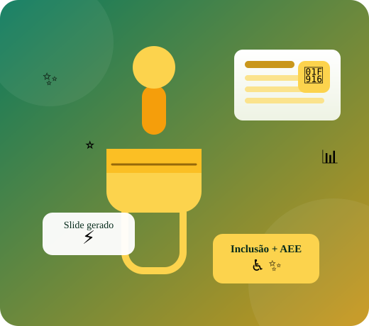
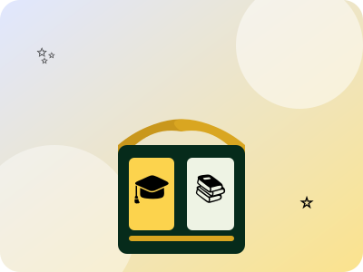
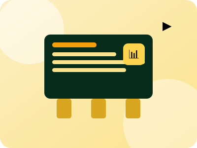
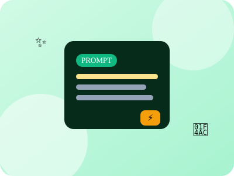
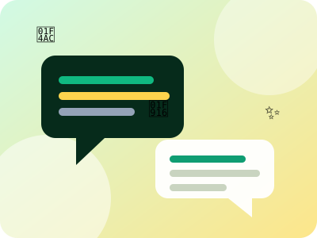
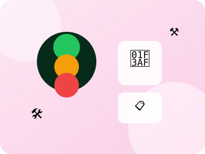

Seu tempo é precioso — por isso o foco aqui é diminuir sua carga horária. Capacite-se a criar materiais didáticos com Inteligência Artificial em minutos, adaptá-los para a inclusão (AEE, TEA, TDAH) e usar a IA como aliada no engajamento de turmas desafiadoras. Este curso foi desenhado para a realidade do professor brasileiro: aulas 100% práticas, prompts prontos para copiar e colar, e estratégias que funcionam da Educação Infantil ao Ensino Médio — mesmo quando a escola tem pouca estrutura ou pouca internet.

Todo o conteúdo organizado em 6 lugares simples — menos confusão, mais prática.

Objetivos, formato, ferramentas e os 6 módulos com todo o conteúdo e checklists.
Ver o curso →
Apresentações prontas para assistir e projetar — curso completo + temas de gestão e sala de aula.
Abrir apresentações →
58 comandos prontos, organizados por tema e por ferramenta (Gamma, Canva, ChatGPT e mais).
Ver prompts →Aprofunde cada módulo com leituras rápidas, glossários e guias para estudar no seu ritmo.
Estudar →
Chat completo para tirar dúvidas na hora: peça planos, atividades, adaptações e ideias de slides.
Perguntar agora →
Ferramentas prontas para usar em sala: semáforo, gerador de plano de aula e quiz jogável.
Usar ferramentas →Uma trilha prática e objetiva, com prompts para copiar e aplicar no dia seguinte. Cada módulo combina fundamentos, exemplos reais da sala de aula, ferramentas e um checklist de entregas — para você sair do curso com materiais prontos, e não apenas com teoria.
Gamma, Canva Design Mágico, Google Slides + Gemini e ChatGPT para criar apresentações completas em minutos.
Ver conteúdo →CAA, pictogramas, Easy Read e design anti-sobrecarga para TEA e TDAH.
Ver conteúdo →A IA como tutora de estudos, ética em trabalhos e avaliações à prova de IA.
Ver conteúdo →Dinâmicas, storytelling, engajamento de turmas difíceis.
Ver conteúdo →Orçamento, poupança e pressão do grupo, metodologia "Situações + Experimente!".
Ver conteúdo →Abordagem interdisciplinar para o Ensino Médio.
Ver conteúdo →Não se trata de automatizar o que você faz, mas de ganhar tempo para o que realmente importa: olhar nos olhos dos alunos, acolher as diferenças e criar aulas que marcam.
Materiais didáticos prontos em minutos, não em horas.
Comunicação Alternativa, leitura fácil, pictogramas para TEA, TDAH e deficiência intelectual.
Quizzes, storytelling interativo, caça ao tesouro para turmas desafiadoras.
Avaliar de formas que a IA não responde: defesa oral, rubricas claras, aplicação prática.
Acesse o modo apresentação e navegue pelo conteúdo completo do curso em 82 slides interativos — mais 119 slides nas 10 coleções temáticas. Em 15 minutos você já sai com um slide pronto para usar.